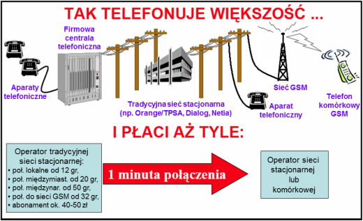
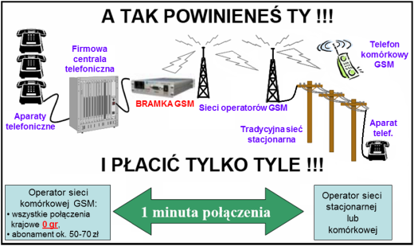
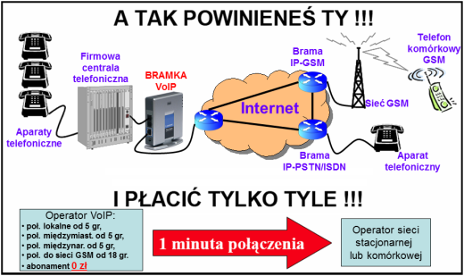
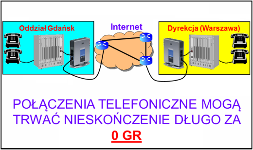

Bramki GSM i VoIP
Firma Teleelektronika oferuje urządzenia pozwalające znacznie obniżyć koszty połączeń
nie zmniejszając zauważalnie ich jakości. Do tego celu służą karty rozszerzeń GSM i VoIP do central
telefonicznych lub zewnętrzne urządzenia o tej samej funkcjonalności - bramki GSM i VoIP.
Bramka GSM to specjalna przystawka do abonenckich central telefonicznych, umożliwiająca bezpośrednie zestawienie połączeń wychodzących poprzez sieć komórkową GSM. Przy nowych ofertach operatorów GSM wiąże się to z ogromnymi oszczędnościami dla użytkowników centrali, którzy w ramach jednego abonamentu (ok. 30 zł dla użytkowników indywidualnych i ok. 50-70 zł dla firm) mogą wykonywać bezpłatne połączenia do wszystkich polskich sieci stacjonarnych i komórkowych bez limitu minut. Centrala abonencka bez bramki GSM zestawia takie połączenia poprzez sieć operatorów telefonii stacjonarnej (Orange/TPSA, NETIA, DIALOG, itp.), co wiąże się z obciążeniem za każdą minutę połączenia. Po zamontowaniu i odpowiednim skonfigurowaniu centrali telefonicznej, wszystkie połączenia wychodzące mogą być automatycznie kierowane przez bramkę GSM. Po wykupieniu licencji na dodatkowe oprogramowanie oferowana bramka umożliwia rozsyłanie oraz zarządzanie odebranymi wiadomościami SMS poprzez komputer podłączony przez port RS-232 lub USB.
Bramka VoIP to specjalna przystawka do abonenckich central telefonicznych, umożliwiająca bezpośrednie zestawienie połączeń wychodzących poprzez sieć IP (Internet). Wiąże się to z ogromnymi oszczędnościami dla użytkowników centrali łączących się z abonentami wszelkich sieci na całym świecie (a szczególnie w przypadku połączeń zagranicznych). Centrala abonencka bez bramki VoIP zestawia wszystkie połączenia poprzez sieć operatorów tradycyjnej telefonii stacjonarnej (Orange/TPSA, NETIA, DIALOG, itp.), co jest znacznie droższym rozwiązaniem niż w przypadku połączeń internetowych. Ponadto, w przypadku tradycyjnych operatorów do kosztu rozmów telefonicznych dochodzi jeszcze comiesięczny abonament, którego u większości operatorów telefonii VoIP nie ma. Po zamontowaniu i odpowiednim skonfigurowaniu centrali telefonicznej, połączenia do wszystkich sieci będą automatycznie kierowane przez bramkę VoIP.
Połączenia wewnątrz sieci operatora VoIP są darmowe. Zastosowanie bramek VoIP pozwala na przeprowadzanie bezpłatnych rozmów między oddziałami firmy niezależnie od odległości między nimi.
Bramki GSM
Bramka GSM to specjalna przystawka do abonenckich central telefonicznych, umożliwiająca bezpośrednie zestawienie połączeń wychodzących poprzez sieć komórkową GSM. Przy nowych ofertach operatorów GSM wiąże się to z ogromnymi oszczędnościami dla użytkowników centrali, którzy w ramach jednego abonamentu (ok. 30 zł dla użytkowników indywidualnych i ok. 50-70 zł dla firm) mogą wykonywać bezpłatne połączenia do wszystkich polskich sieci stacjonarnych i komórkowych bez limitu minut. Centrala abonencka bez bramki GSM zestawia takie połączenia poprzez sieć operatorów telefonii stacjonarnej (Orange/TPSA, NETIA, DIALOG, itp.), co wiąże się z obciążeniem za każdą minutę połączenia. Po zamontowaniu i odpowiednim skonfigurowaniu centrali telefonicznej, wszystkie połączenia wychodzące mogą być automatycznie kierowane przez bramkę GSM. Po wykupieniu licencji na dodatkowe oprogramowanie oferowana bramka umożliwia rozsyłanie oraz zarządzanie odebranymi wiadomościami SMS poprzez komputer podłączony przez port RS-232 lub USB.


Bramki VoIP
Bramka VoIP to specjalna przystawka do abonenckich central telefonicznych, umożliwiająca bezpośrednie zestawienie połączeń wychodzących poprzez sieć IP (Internet). Wiąże się to z ogromnymi oszczędnościami dla użytkowników centrali łączących się z abonentami wszelkich sieci na całym świecie (a szczególnie w przypadku połączeń zagranicznych). Centrala abonencka bez bramki VoIP zestawia wszystkie połączenia poprzez sieć operatorów tradycyjnej telefonii stacjonarnej (Orange/TPSA, NETIA, DIALOG, itp.), co jest znacznie droższym rozwiązaniem niż w przypadku połączeń internetowych. Ponadto, w przypadku tradycyjnych operatorów do kosztu rozmów telefonicznych dochodzi jeszcze comiesięczny abonament, którego u większości operatorów telefonii VoIP nie ma. Po zamontowaniu i odpowiednim skonfigurowaniu centrali telefonicznej, połączenia do wszystkich sieci będą automatycznie kierowane przez bramkę VoIP.
Połączenia wewnątrz sieci operatora VoIP są darmowe. Zastosowanie bramek VoIP pozwala na przeprowadzanie bezpłatnych rozmów między oddziałami firmy niezależnie od odległości między nimi.

